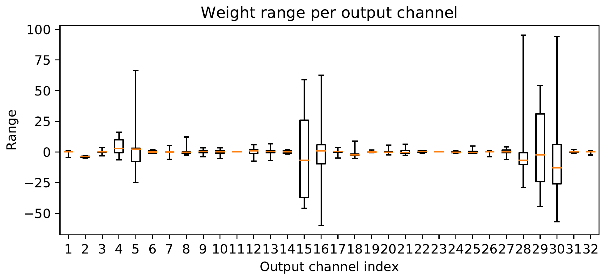

On this page
Smaller model means less memory bandwidth. Faster inference because fewer bits and fewer multiplies. Lower power because integer ops are cheaper than float on most hardware. You get the idea.
There are a couple types of quantization: Post-Training Quantization (PTQ) and Quantization-Aware Training (QAT). PTQ comes in two flavors: Dynamic and Static. Let’s break them down.
This is the lazy version of quantization, and that's not a bad thing. Super simple. You quantize the weights after training. Activations stay in float32 during inference but get quantized on the fly. No calibration. No fuss.
import torch.quantization
model = YourModel()
model.eval()
quantized_model = torch.quantization.quantize_dynamic(
model, {torch.nn.Linear}, dtype=torch.qint8
)
In this setup:
So why use it? It’s stupid easy and gives you a fast win on CPUs, especially for LSTMs and Linear-heavy models. On a small MNIST CNN from the companion notebook, dynamic quantization barely moved the needle:
But why doesn’t it work well for CNNs? Because Conv2d is not matmul. Conv layers have gnarly memory access patterns and need pre-quantized activations to be efficient. Dynamic quantization doesn’t do that. You’d be quantizing every sliding window patch per inference. Not fun. Not fast.
Also, dynamic quantization doesn’t touch things like BatchNorm or ReLU. It just swaps in dynamic versions of Linear and LSTM layers. So, no fusion here. No point fusing layers if you're not touching them.
Now we’re doing it properly. Both weights and activations go to int8. But to quantize activations, you first need to know their range. That’s where calibration comes in. You run some input data through the model (no labels needed) to collect min and max values of activations. PyTorch uses that to decide how to quantize.
This works great for CNNs and edge deployment. You get full int8 inference.
The workflow looks like this:
model = YourCNN()
model.eval()
# Fuse conv + bn + relu groups first. One op is cheaper than three.
torch.quantization.fuse_modules(model, [['conv', 'bn', 'relu']], inplace=True)
# Pick how to quantize: 'fbgemm' on x86, 'qnnpack' on ARM
model.qconfig = torch.quantization.get_default_qconfig('fbgemm')
# Insert observers
torch.quantization.prepare(model, inplace=True)
# Calibration: run real inputs through. No labels needed.
with torch.no_grad():
for images in calibration_loader:
model(images)
# Convert to int8
torch.quantization.convert(model, inplace=True)
Same MNIST CNN, this time with static quantization. The accuracy holds and the model shrinks to a quarter of its size:
Let’s talk about what’s going on.
Before quantizing, you fuse Conv + BatchNorm + ReLU into a single op. Why? It reduces memory overhead, speeds things up, and minimizes numerical errors.
QConfig tells PyTorch how to quantize: symmetric vs asymmetric, per-tensor vs per-channel. Example:
from torch.quantization import default_per_channel_weight_observer, MinMaxObserver
import torch # Ensure torch is imported for dtypes
my_qconfig = torch.quantization.QConfig(
activation=MinMaxObserver.with_args(dtype=torch.quint8),
weight=default_per_channel_weight_observer.with_args(dtype=torch.qint8) # Specify dtype for weights
)
model.qconfig = my_qconfig # Then assign it to your model
Observers are how PyTorch measures activation ranges. Here's a basic one (conceptual, PyTorch's ObserverBase is more complex):
from torch.ao.quantization.observer import ObserverBase
class MinMaxObserverExample(ObserverBase): # Conceptual
def __init__(self, *args, **kwargs):
super().__init__(*args, **kwargs)
self.min_val = float('inf')
self.max_val = float('-inf')
def forward(self, x):
self.min_val = min(self.min_val, x.min().item())
self.max_val = max(self.max_val, x.max().item())
return x
During calibration, these observers record activation stats. Then PyTorch figures out the scale and zero-point needed to map float values to int8.
Calibration is just watching real data flow through the model so every layer gets an honest min and max. Those ranges become the scale and zero-point.
But MinMax isn’t always enough.
MinMax gets clobbered by outliers. Histogram observers are smarter. They build a histogram of the activations, simulate multiple clipping thresholds, and pick the one that gives the smallest quantization error.
import torch.quantization as tq
qconfig_hist = tq.QConfig(
activation=tq.observer.HistogramObserver.with_args(
dtype=torch.quint8, qscheme=torch.per_tensor_affine
),
weight=tq.default_per_channel_weight_observer.with_args(dtype=torch.qint8)
)
model.qconfig = qconfig_hist
They look at the L2 error between the original and the quantized-dequantized tensor and find the best range for preserving accuracy.
This is where quantization actually starts acting intelligent. Especially important when your activations have long tails, skew, or multimodal distributions.
I keep telling you to look at the histogram. So here, look at a real one. These are actual weights from a small CNN I trained on MNIST for one epoch, the same model as the companion notebook. Pick the filter with the outlier and watch what it does to everyone else: the scale is set by the biggest weight, so one loud weight makes all the quiet ones share a handful of bins.
Weights are from SimpleCNN trained 1 epoch on MNIST (see companion notebook). Scheme for this toy: symmetric per-layer, scale = max|w| / (2^(b-1) - 1), zero-point 0, so the full int range stretches to hug the single biggest weight.
Quantization error is visible as histogram coarsening. And watch the outlier: filter 15's 0.427 weight stretches the bins for all 287 of its friends.
Here is the decision that makes or breaks low-bit quantization, and it is embarrassingly simple: where do you cut the range? Every weight outside your [qmin, qmax] gets clipped, and every weight inside gets rounded to a 4-bit grid. Cut wide and the outliers are safe but the bins get fat. Cut tight and the bins get fine but the outliers get beheaded.
Nagel and co.'s whitepaper frames it as two named strategies. Min-max (Eq. 14-15): qmin = min V, qmax = max V, where V is the weight tensor. Zero clipping error by construction, but one loud outlier stretches the bins for everyone. MSE (Eq. 16): search the (qmin, qmax) pair that minimizes the Frobenius norm ||V - V̂||2F between the weights and their quantized version, outliers be damned. A third trick from Nagel et al. (2019): when a layer has batch norm, set the range from the BN parameters with alpha = 6, so only large outliers get clipped.
Nagel, M., Fournarakis, M., Amjad, R. A., Bondarenko, Y., van Baalen, M., and Blankevoort, T. A White Paper on Neural Network Quantization. arXiv, 2021. arXiv:2106.08295. Read the paper

Figure 5. Per (output) channel weight ranges of the first depthwise-separable layer in MobileNetV2 after BN folding. The boxplots show the min and max value, the 2nd and 3rd quartile and the median are plotted for each channel. The paper's actual Figure 5, extracted from the arXiv e-print source. Nagel et al. (2021). arXiv:2106.08295
Figure 5 is why min-max loses. These are per-channel weight ranges from the first depthwise layer of MobileNetV2 after batch-norm folding. Most channels are tiny. A few are enormous. One global min-max range is set by the freaks, and every normal channel pays for it in rounding error. Play with the toy below, then look at the figure again.
4-bit (illustrative toy). Synthetic weights, not the paper's data. Every readout here is labeled illustrative. The paper's real numbers are in the box below the toy.
ImageNet validation accuracy, %, symmetric weight quantization with activations in FP32, averaged over 5 runs. FP32 baselines: ResNet18 69.68, MobileNetV2 71.72.
| Model (FP32) | W8 Min-Max | W8 MSE | W4 Min-Max | W4 MSE |
|---|---|---|---|---|
| ResNet18 (69.68) | 69.57 | 69.45 | 0.12 | 18.82 |
| MobileNetV2 (71.72) | 71.16 | 71.15 | 0.59 | 13.77 |
"For high bit-widths, the MSE and min-max approaches are mostly on par. However, at lower bit-widths the MSE approach clearly outperforms the min-max." (Nagel et al., 2021, Section 3.1)
When you quantize a float:
And to dequantize:
zero_point = 0scale = max(abs(min_val), abs(max_val)) / 127 (for int8, typically range [-127, 127] or [-128, 127])Used for weights. Assumes distribution is centered around 0 (which is usually true for weights).
zero_point ≠ 0scale = (x_max - x_min) / 255 (for quint8, typically range [0, 255])zero_point = round(qmin - x_min / scale) (adjusted to be within [qmin, qmax])Used for activations. Better when data is skewed (e.g., ReLU output).
Scale is the width of each integer bin. The float range gets chopped into 256 equal steps, and everything inside one bin rounds to the same number. Zero-point 0 means float 0 lands exactly on int 0.
Same idea, one dial. Drag the bit-width and watch what happens to the step size. Fixed range, plus/minus 1.2V, like the ADC tutorial:
Every bit you drop doubles the step size and costs you about 6 dB. The 0.37V sample snaps to the nearest bin center: the red arrow is the rounding error, growing with each lost bit. That is the entire trade.
Bad calibration = bad quantization.
If your calibration dataset is too small or unrepresentative, the model sees weird ranges and either clips too much or wastes resolution. The more realistic your calibration inputs, the better your scale and zero-point.
Also, remember: PTQ is a one-shot deal. Once you calibrate and convert, you don’t get to fine-tune anymore. It’s set in stone.
Quantizing just part of a model? You’d better manage the float-int transitions carefully. These quant-dequant boundaries are expensive. You’re moving data from int8 to float and back. It kills performance and breaks layer fusion.
Once you quantize, stay quantized as long as possible. You can safely quantize ReLU, pooling, and many elementwise ops.
Use FX to trace and manipulate the model graphically.
from torch.fx import symbolic_trace
graph = symbolic_trace(quantized_model)
print(graph.graph) # For a textual representation
graph.print_tabular() # For a more readable table
FX makes it easier to:
It’s the modern way to do quantization in PyTorch. Forget the old Eager mode unless you like pain.
import torch # Ensure torch is imported for torch.quantization
qconfig_dict = {"": torch.quantization.get_default_qconfig('fbgemm')}
FX takes care of applying qconfig recursively, inserting only the observers you need, and fusing layers correctly.
Let’s do an example with a CNN model to wrap up PTQ. We manually add PerChannelMinMaxObserver for weights and MinMaxObserver for activation.
class ObserverCNN(nn.Module):
def __init__(self):
super().__init__()
self.conv1 = nn.Conv2d(3, 16, 3, stride=1, padding=1)
self.relu1 = nn.ReLU()
self.conv2 = nn.Conv2d(16, 32, 3, stride=1, padding=1)
self.relu2 = nn.ReLU()
self.pool = nn.AdaptiveAvgPool2d((1, 1))
self.fc = nn.Linear(32, 10)
# Manual observers
self.obs_act1 = MinMaxObserver(dtype=torch.quint8)
self.obs_act2 = MinMaxObserver(dtype=torch.quint8)
self.obs_fc_in = MinMaxObserver(dtype=torch.quint8)
self.obs_weight1 = PerChannelMinMaxObserver(ch_axis=0, dtype=torch.qint8)
self.obs_weight2 = PerChannelMinMaxObserver(ch_axis=0, dtype=torch.qint8)
self.obs_weight_fc = PerChannelMinMaxObserver(ch_axis=0, dtype=torch.qint8) # For Linear weights
def forward(self, x):
# Observe conv1 weight
self.obs_weight1(self.conv1.weight)
x = self.conv1(x) # Apply conv1
x = self.relu1(x) # Apply relu1
self.obs_act1(x) # Observe output of relu1
# Observe conv2 weight
self.obs_weight2(self.conv2.weight)
x = self.conv2(x) # Apply conv2
x = self.relu2(x) # Apply relu2
self.obs_act2(x) # Observe output of relu2
x = self.pool(x)
x = x.view(x.size(0), -1)
self.obs_weight_fc(self.fc.weight) # Observe fc weight
self.obs_fc_in(x) # Observe input to fc layer
x = self.fc(x) # Apply fc
return x
model_ptq_example = ObserverCNN().eval()
# Calibration pass: run real inputs through, no labels needed
with torch.no_grad():
for images in calibration_loader:
_ = model_ptq_example(images)
Here is what the observers actually report after calibrating the MNIST CNN from the companion notebook. Each layer gets its own min, max, scale, and zero-point:
| Layer | Min | Max | Scale | Zero-point |
|---|---|---|---|---|
| conv.0 | 0.000000 | 6.478520 | 0.025406 | 0 |
| conv.2 | 0.000000 | 17.662004 | 0.069263 | 0 |
And after convert(), those numbers are baked into real quantized layers:
| Layer | Quantized module | Quantization params |
|---|---|---|
| conv.0 | QuantizedConvReLU2d(1, 32) | scale 0.025406, zero_point 0 |
| conv.2 | QuantizedConvReLU2d(32, 64) | scale 0.069263, zero_point 0 |
| fc1 | QuantizedLinear(9216, 128) | qscheme torch.per_channel_affine |
calculate_qparams() is a method used by observers in PyTorch to compute scale and zero-point. That's the observer's job to begin with.
General quantization formula: quantized = round(clamp(x / scale + zero_point, qmin, qmax))
scale = max(abs(min_val), abs(max_val)) / 127 (or 128)zero_point = 0scale = (max_val - min_val) / (qmax - qmin)zero_point = round(qmin - min_val / scale)Coming up next: Quantization Aware Training, where we teach the model to embrace the pain and learn to live with it.
If PTQ drops too much accuracy, QAT is how you can recover it. QAT requires retraining; it’s slower but more accurate. It learns to suppress outliers and it works well with tuning. You start with inserting observers (which are actually FakeQuantize modules in QAT) just like PTQ. These FakeQuantize modules are differentiable. The model learns to adapt to quantization noise.
from torch.ao.quantization import get_default_qat_qconfig
from torch.ao.quantization.quantize_fx import prepare_qat_fx, convert_fx
qat_qconfig = get_default_qat_qconfig('fbgemm')
qconfig_dict_qat = {"": qat_qconfig}
model_for_qat = ObserverCNN() # Assuming ObserverCNN or similar model
model_for_qat.train() # Set model to training mode for QAT
# Note: prepare_qat_fx typically requires the model to be in training mode.
model_prepared_qat = prepare_qat_fx(model_for_qat, qconfig_dict_qat)
Then you train the model_prepared_qat and convert it to int8 using convert_fx(model_prepared_qat.eval()). Inside the FakeQuantize module, it takes x, computes scale and zero-point, and simulates quantization like:
QAT can learn activation clipping, push small weights out of dead zones, and learn quantization-friendly distributions.
QAT simulates quantization in the forward pass. Rounding and clamping are, however, both non-differentiable, so you can't directly backpropagate through them. QAT uses a Straight-Through Estimator (STE), which basically means this operation has no gradient for the non-differentiable part. It pretends the output equals the input during backpropagation for that specific part.
class RoundSTE(torch.autograd.Function):
@staticmethod
def forward(ctx, x):
return torch.round(x)
@staticmethod
def backward(ctx, grad_output):
return grad_output # straight-through (acts like identity for the rounding part)
STE allows the model to learn parameters and "survive" quantization during training.
Now let’s go back to MovingAverageMinMaxObserver (often used within FakeQuantize for QAT). It uses an exponential moving average of min/max values observed during training. FakeQuantize modules are inserted during prepare_qat_fx() and are active during the training phase. After training, during convert_fx(), they’re replaced with real quantization operations.
The moving average update rules are typically:
Where α (alpha) is a momentum term.
QAT is fussy. You need lower learning rates, more epochs, and a good starting point, so always start from your trained FP32 model. And same as static quantization, you fuse BatchNorm into the conv or linear layer before conversion. It stops being its own layer.
Here is the trick that actually works: warm up first. Let the observers watch data and learn the scale and zero-point while the model trains. Then freeze those numbers and keep training. The second phase is the model learning to live with one fixed, consistent flavor of quantization noise. If you keep moving the noise around while the model is trying to learn, it never settles.
Under the hood, a FakeQuantize module is two things glued together: an observer that watches the range, and a quantize-then-dequantize simulator. You can poke at both. One thing that tripped me up the first time: the activation_post_process attribute on a layer (e.g., model.conv1.activation_post_process) *is* the FakeQuantize module itself after prepare_qat_fx. Same object, just wearing PyTorch's naming hat.
if hasattr(model_prepared_qat, 'conv1') and hasattr(model_prepared_qat.conv1, 'activation_post_process'):
fq_module = model_prepared_qat.conv1.activation_post_process # This IS the FakeQuantize module
current_scale, current_zero_point = fq_module.calculate_qparams()
print(f"Scale: {current_scale}, Zero-point: {current_zero_point}")
if hasattr(fq_module, 'min_val') and hasattr(fq_module, 'max_val'):
print(f"Observed min by FakeQuant: {fq_module.min_val.item()}, Observed max: {fq_module.max_val.item()}")
else:
print("conv1 or activation_post_process not found in conceptual model_prepared_qat.")
So the full loop is: warm-up, observers on, ranges updating every batch, FakeQuant rounding your activations while STE handles the backward pass, and the model learning while the noise keeps shifting. Then you freeze scale and zero-point. Now the noise is fixed and the model just learns to live with it. That frozen phase is where most of the accuracy recovery happens.
So you quantized your model and something broke. Been there. Here is how it usually shows up and what I check first:
FakeQuant not simulating, model not converging (QAT).
FakeQuant is clipping too hard and your activations are getting squashed.convert_fx() fails. This happens a lot!
for name, module in model_prepared_qat.named_modules():
if isinstance(module, torch.ao.quantization.FakeQuantize):
# For FakeQuantize modules, scale and zero_point are attributes
print(f"{name} -- scale: {module.scale.item() if torch.is_tensor(module.scale) else module.scale}, "
f"zero_point: {module.zero_point.item() if torch.is_tensor(module.zero_point) else module.zero_point}")
elif hasattr(module, 'weight_fake_quant'): # For layers with separate weight fake_quant
print(f"{name}.weight_fake_quant -- scale: {module.weight_fake_quant.scale.item()}, "
f"zero_point: {module.weight_fake_quant.zero_point.item()}")
My rule of thumb: scale is 0 or NaN, the observers saw nothing. Scale is absurdly large or tiny, an outlier skewed the range.
Plot the activations. Seriously, just look at them. Hook a layer, histogram the float values, and compare against what the observer claims. If the observer's range is way wider than the actual data, you know where your resolution went.
activation_histograms = {}
def capture_activations_hook(name):
def hook(module, input_val, output_val):
data_to_log = output_val
if isinstance(output_val, tuple): data_to_log = output_val[0] # Handle tuple outputs
if torch.is_tensor(data_to_log):
activation_histograms[name] = data_to_log.detach().cpu().flatten().numpy()
return hook
model_to_debug = ObserverCNN().eval() # Or your specific model, ensure ObserverCNN is defined
hook_conv1 = model_to_debug.conv1.register_forward_hook(capture_activations_hook("conv1_output"))
hook_relu1 = model_to_debug.relu1.register_forward_hook(capture_activations_hook("relu1_output"))
with torch.no_grad():
_ = model_to_debug(torch.randn(1, 3, 32, 32)) # Adjust input shape as needed
for name, data in activation_histograms.items():
plt.figure()
plt.hist(data, bins=100)
plt.title(f"Activation Histogram: {name}")
plt.xlabel("Value"); plt.ylabel("Frequency"); plt.grid(True)
plt.show()
hook_conv1.remove() # Clean up hooks
hook_relu1.remove()
Then compare float vs quantized outputs, layer by layer. When one layer's output suddenly diverges, you found your culprit.
if hasattr(model_prepared_qat, 'conv1') and \
hasattr(model_prepared_qat.conv1, 'activation_post_process') and \
hasattr(model_prepared_qat.conv1.activation_post_process, 'disable_fake_quant'):
model_prepared_qat.conv1.activation_post_process.disable_fake_quant()
# Re-evaluate and then re-enable with .enable_fake_quant() or re-prepare the model.
print_tabular()This dumps the FX graph with the observers attached. I use it to hunt for missing activation_post_process hooks and stray quant/dequant pairs, which usually means bad fusion.
if hasattr(model_prepared_qat, 'graph'):
model_prepared_qat.graph.print_tabular()
else:
print("Model does not seem to be an FX graph module or 'graph' attribute is missing.")
activation_post_processRemember, activation_post_process is just PyTorch's name for the FakeQuantize module that prepare_qat_fx() sticks on the layer. Print its scale and zero-point directly.
# Example:
self.conv = nn.Conv2d(...)
self.conv.activation_post_process = FakeQuantize(...)
if hasattr(model_prepared_qat, 'conv1') and hasattr(model_prepared_qat.conv1, 'activation_post_process'):
fq_module_inspect = model_prepared_qat.conv1.activation_post_process
print(fq_module_inspect.scale, fq_module_inspect.zero_point)
if hasattr(fq_module_inspect, 'min_val'): # Check if min_val/max_val are directly on FakeQuant
print("Observed min/max by FakeQuant:", fq_module_inspect.min_val.item(), fq_module_inspect.max_val.item())
Anything outside [min, max] gets clipped. That is the trade.
torch.ao.quantization.quant_debugWhen you want the full diff, this records float vs quantized activations layer by layer, with histograms of the differences. Fair warning, the API moves around between PyTorch versions.
debug_model = add_debug_observers_qat(model_prepared_qat, qconfig_dict_qat)
print(debug_model.activation_debug_stats) # Or similar attribute, API might change
tensor = torch.randn(1000) # Example tensor
plt.hist(tensor.detach().cpu().flatten().numpy(), bins=100)
plt.title("Tensor Value Histogram")
plt.show()
MovingAverageMinMaxObserver for PTQ. That’s a QAT thing. PTQ wants MinMaxObserver or HistogramObserver, one shot and done.